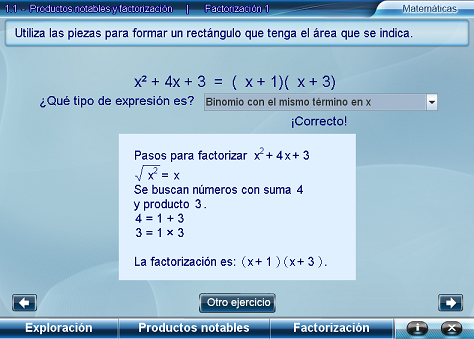

Unidad 1.1Productos notables y factorizaciónReferencia curricularPropósito Efectuar o simplificar cálculos con expresiones algebraicas tales como:
Instrucciones generalesLa unidad se divide en tres apartados:
1. Exploración
2. Productos notables 3. Factorización Se puede navegar entre los apartados (grupos de escenas) con el menú de la parte inferior.
Este menú aparece a lo largo de toda la unidad y conserva su funcionalidad.
Se puede navegar entre las escenas con las flechas que hay en la parte inferior de las mismas. 1. ExploraciónEste primer apartado consta de una escena. El objetivo de esta escena es que el usuario se familiarice con los bloques algebraicos. Para lo anterior, se presentan tres figuras geométricas de distinto tamaño con las cuales se rellena el rectángulo azul.
Se puede girar el rectángulo amarillo al presionar sus extremos para luego, arrastrarlo hasta la posición deseada.
Una vez relleno el rectángulo azul, al presionar el botón Verificar, se muestran las expresiones que representan las medidas de los lados del rectángulo.
Sugerencias didácticasUna primera actividad que se puede proponer a los alumnos es justificar las expresiones que aparecen indicando las áreas de cada una de las figuras; para ello, puede empalmar los cuadrados y rectángulos por sus lados iguales. Si lo considera necesario, recuerde a los alumnos que se puede ocupar una literal para representar un número desconocido, como el caso del lado que mide x en el rectángulo amarillo, también recuérdeles que el resultado de multiplicar x por x es x2, y de x por 1 es x.
Es importante aclarar con los estudiantes que las etiquetas de cada figura indican su área. Para obtener la expresión que representa el lado del rectángulo azul hay que tomar en cuenta las medidas de los lados de las piezas con las que se rellenó y no sus áreas. Una vez que hayan identificado las expresiones relacionadas con las medidas de los lados y la del área, pídales que, antes de verificar, escriban en su cuaderno las expresiones que representan los lados del rectángulo con el que están trabajando. Esto les servirá para analizar posibles errores. Permita que algunos voluntarios pasen al pizarrón a rellenar los cuadrados o rectángulos que presente el interactivo. Llame su atención acerca de poder identificar las expresiones que representan las medidas de los lados y del área y no el orden en que coloquen los bloques.
2. Productos notablesEl objetivo de esta escena es que los alumnos descubran las reglas para obtener los productos notables al elevar al cuadrado un binomio, y al multiplicar binomios con un término común. La actividad consiste en formar rectángulos que cumplan con las medidas dadas para el largo y el ancho. Seleccione del menú la opción con la que quiera trabajar, Binomios al cuadrado o Binomios con término común, el cual puede ser el término en x o el término independiente.
Forme el rectángulo que se indica y al presionar Verificar, sabrá si el rectángulo construido es correcto pues le solicita indicar su área presionando los pulsadores.
Si el área indicada es la correcta, aparece la expresión algebraica que representa la multiplicación del largo por el ancho igual al área del rectángulo obtenido.
Sugerencias didácticasUna vez que se elige con cuál opción se trabajará, haga notar a los alumnos cómo son las expresiones algebraicas del largo y el ancho del rectángulo buscado, y cuántas piezas se necesitan de cada figura para formar el rectángulo solicitado. Pida a los estudiantes que anoten las expresiones que representan los lados y el área de todos los rectángulos que formen. Si lo considera necesario, después de resolver varios rectángulos, puede escribir las expresiones correspondientes en el pizarrón y pedir a los alumnos que observen qué tienen en común, las expresiones de los lados en relación con la del área. Es importante que los alumnos expliquen sus conclusiones. Esto le orientará sobre cuáles podrían ser las dificultades que tienen. Pueden ocupar el interactivo para confirmar sus hipótesis o para mostrar contraejemplos cuando no sea correcta la conclusión a la que llegaron. 3. FactorizaciónEste apartado consta de dos escenas. Factorización 1El propósito de esta escena es que los alumnos descubran las reglas para factorizar algunos productos notables. Para ello, se pide formar un rectángulo conociendo su área y después indicar las expresiones que representen sus lados.
Cuando se haya formado el rectángulo correspondiente al área dada se presenta la igualdad entre el área y los factores que expresan las medidas de los lados.
El siguiente paso es elegir el tipo de expresión que se obtuvo. A continuación se presenta el proceso que explica cómo se obtiene la factorización.
 Factorización 2En esta escena se presenta una demostración geométrica de la factorización de una diferencia de cuadrados.
Sugerencias didácticasPida a los estudiantes que expliquen cada uno de los pasos que se muestran en la escena para hacer un resumen de cómo se factoriza una diferencia de cuadrados. Créditos
Autores Esta unidad interactiva fue desarrollada en el ILCE por el Grupo Descartes y el equipo de MATEMÁTICAS III. Sus contenidos se distribuyen bajo una licencia de  La unidad utiliza Descartes que es software libre. Adaptación a DescartesJS: Juan Gmo. Rivera Berrío y José R. Galo Sánchez (2016)
|